Firearms
RIFLES
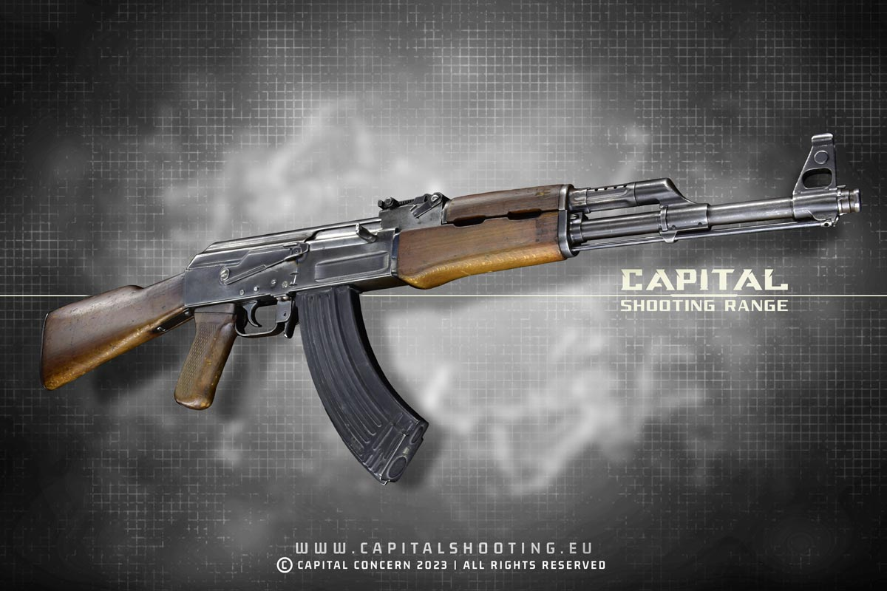
AK-47
The AK-47, officially called Avtomat Kalashnikova, is a Russian-designed assault rifle that is chambered for the 7.62x39mm cartridge. It is a prominent member of the Kalashnikov family of rifles, known for its durability and widespread use. The AK-47, also known as the automatic Kalashnikov, was designed by Mikhail Kalashnikov in 1947 and adopted by the Soviet Army in 1949.
Key Features and Characteristics:
- Design: The AK-47 is a gas-operated, semi-automatic and full-automatic rifle.
- Reliability: It is known for its rugged construction, ease of operation, and low production costs, making it a popular choice for military and paramilitary forces.
- Ammunition: It fires the 7.62x39mm M43 cartridge, which is an intermediate-power cartridge.
- Magazine Capacity: It typically uses a 30-round magazine.
- Origin and History: The AK-47 was developed in the Soviet Union and has become one of the most widely used assault rifles in the world.
- Global Impact: It has been used by various factions and countries, contributing to its widespread reputation.
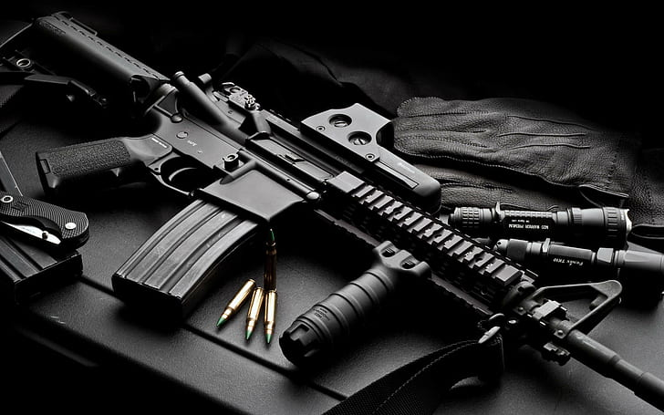
M4A1
The M4 carbine (officially Carbine, Caliber 5.56 mm, M4) is a 5.56×45mm NATO assault rifle developed in the United States during the 1980s. It is a shortened version of the M16A2 assault rifle. The M4 is extensively used by the US military, with decisions to largely replace the M16 rifle in US Army (starting 2010) and US Marine Corps (starting 2016) combat units as the primary infantry weapon and service rifle.
Key Features and Characteristics:
- Type: Assault rifle / Carbine
- Place of Origin: United States
- In Service: 1994–present
- Manufacturers: Colt's Manufacturing Company, FN Herstal, Remington Arms
- Cartridge: 5.56×45mm NATO
- Action: Gas-operated, closed rotating bolt
- Rate of Fire: 700–970 rounds/min
- Effective Range: 500-600 meters
- Feed System: 30-round detachable STANAG magazine
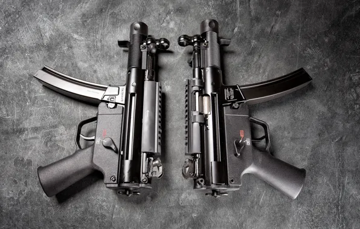
MP5
The Heckler & Koch MP5 (German: Maschinenpistole 5) is a submachine gun developed in the 1960s by German firearms manufacturer Heckler & Koch. It is one of the most widely used submachine guns in the world, having been adopted by over forty nations and numerous military, police, and security organizations.
Key Features and Characteristics:
- Type: Submachine gun
- Place of Origin: West Germany
- Manufacturer: Heckler & Koch
- Cartridge: 9×19mm Parabellum
- Action: Roller-delayed blowback, closed bolt
- Rate of Fire: 800 rounds/min
- Effective Range: 200 meters
- Feed System: 15-, 30-, 40-, or 50-round detachable box magazine
- Weight: 2.54 kg (5.6 lb)
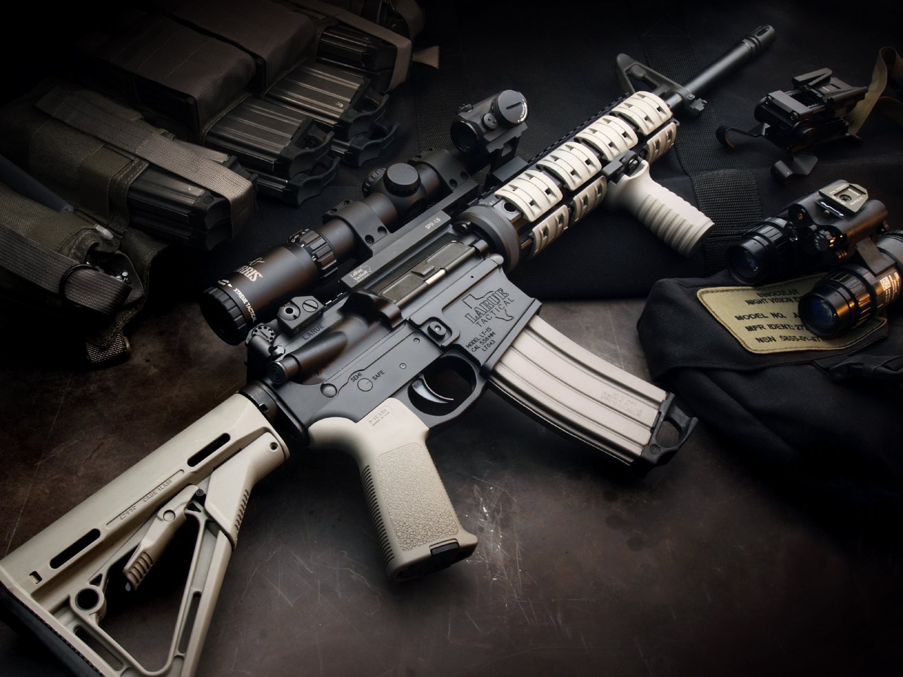
AR-15
The AR-15 is a lightweight, magazine-fed, gas-operated semi-automatic rifle. It was first designed by Eugene Stoner in the late 1950s and has since become one of the most popular civilian rifles in the United States. The AR-15 platform is known for its modularity, allowing for extensive customization.
Key Features and Characteristics:
- Type: Semi-automatic rifle
- Place of Origin: United States
- Manufacturer: Various manufacturers
- Cartridge: 5.56×45mm NATO
- Action: Gas-operated, rotating bolt
- Effective Range: 400-600 meters
- Feed System: 10-, 20-, or 30-round detachable box magazine
- Weight: 2.27-3.9 kg (5-8.5 lb)
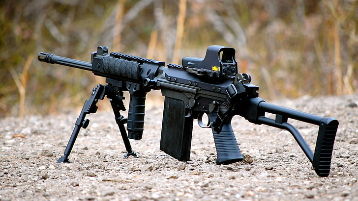
FN FAL
The FN FAL (Fusil Automatique Léger, "Light Automatic Rifle") is a battle rifle designed by Belgian small arms designer Dieudonné Saive and manufactured by FN Herstal. During the Cold War, it was adopted by many NATO countries and became known as "The Right Arm of the Free World."
Key Features and Characteristics:
- Type: Battle rifle
- Place of Origin: Belgium
- Manufacturer: FN Herstal
- Cartridge: 7.62×51mm NATO
- Action: Gas-operated, tilting breechblock
- Rate of Fire: 650-700 rounds/min
- Effective Range: 600 meters
- Feed System: 20-round detachable box magazine
- Weight: 4.25 kg (9.4 lb)
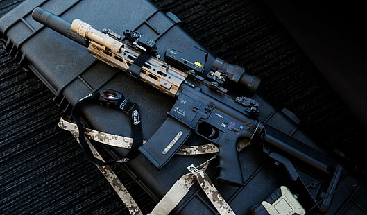
HK G3
The Heckler & Koch G3 is a 7.62×51mm NATO battle rifle developed in the 1950s by the German armament manufacturer Heckler & Koch GmbH in collaboration with the Spanish state-owned design and development agency CETME.
Key Features and Characteristics:
- Type: Battle rifle
- Place of Origin: West Germany
- Manufacturer: Heckler & Koch
- Cartridge: 7.62×51mm NATO
- Action: Roller-delayed blowback
- Rate of Fire: 500-600 rounds/min
- Effective Range: 400 meters
- Feed System: 20-round detachable box magazine
- Weight: 4.4 kg (9.7 lb)
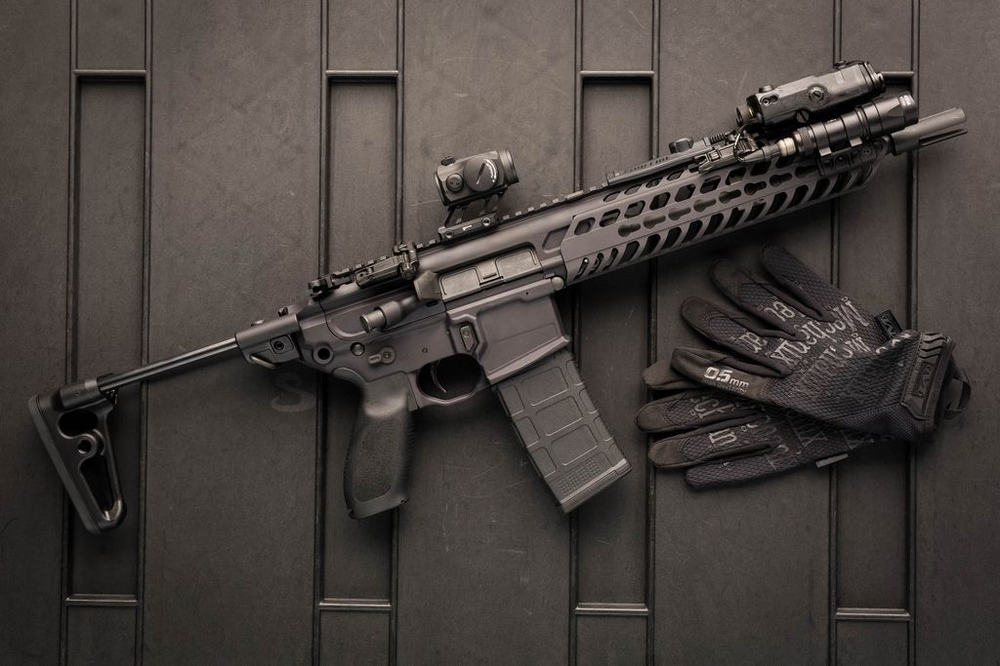
SIG MCX
The SIG MCX is a modular rifle system developed by SIG Sauer. It features a short-stroke gas piston system and is designed to be highly adaptable for various roles and configurations. The MCX has been adopted by several military and law enforcement agencies worldwide.
Key Features and Characteristics:
- Type: Modular rifle system
- Place of Origin: United States
- Manufacturer: SIG Sauer
- Cartridge: 5.56×45mm NATO, 7.62×39mm, .300 BLK
- Action: Short-stroke gas piston
- Rate of Fire: 700-800 rounds/min
- Effective Range: 500 meters
- Feed System: 30-round detachable box magazine
- Weight: 2.7-3.2 kg (6-7 lb)
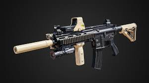
HK416
The Heckler & Koch HK416 is a gas-operated assault rifle chambered for the 5.56×45mm NATO cartridge. It is designed and manufactured by Heckler & Koch and is an improved version of the M4 carbine, featuring a short-stroke gas piston system.
Key Features and Characteristics:
- Type: Assault rifle
- Place of Origin: Germany
- Manufacturer: Heckler & Koch
- Cartridge: 5.56×45mm NATO
- Action: Short-stroke gas piston
- Rate of Fire: 700-900 rounds/min
- Effective Range: 500 meters
- Feed System: 30-round detachable box magazine
- Weight: 3.49 kg (7.7 lb)

Steyr AUG
The Steyr AUG (Armee Universal Gewehr) is an Austrian bullpup assault rifle designed in the 1960s by Steyr Mannlicher. It was one of the first successful bullpup rifles and has been adopted by military and law enforcement organizations worldwide.
Key Features and Characteristics:
- Type: Bullpup assault rifle
- Place of Origin: Austria
- Manufacturer: Steyr Mannlicher
- Cartridge: 5.56×45mm NATO
- Action: Gas-operated, rotating bolt
- Rate of Fire: 680-750 rounds/min
- Effective Range: 450 meters
- Feed System: 30- or 42-round detachable box magazine
- Weight: 3.6 kg (7.9 lb)

IWI Tavor
The IWI Tavor is an Israeli bullpup assault rifle chambered in 5.56×45mm NATO. It is designed and manufactured by Israel Weapon Industries (IWI). The Tavor is designed to maximize reliability, durability, and ease of maintenance, particularly in adverse conditions.
Key Features and Characteristics:
- Type: Bullpup assault rifle
- Place of Origin: Israel
- Manufacturer: Israel Weapon Industries
- Cartridge: 5.56×45mm NATO
- Action: Gas-operated, rotating bolt
- Rate of Fire: 750-900 rounds/min
- Effective Range: 500 meters
- Feed System: 30-round detachable box magazine
- Weight: 3.27 kg (7.2 lb)
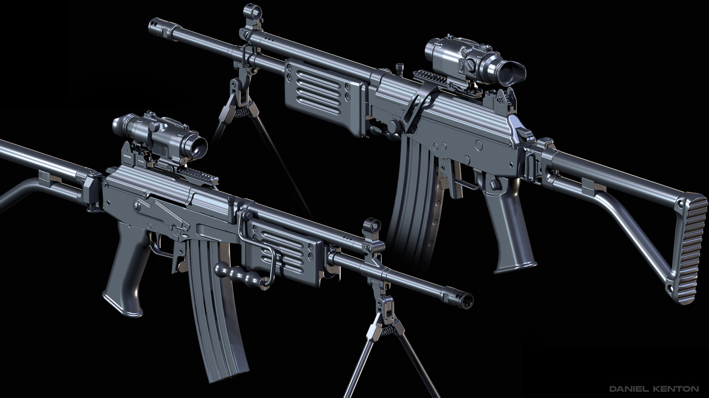
Galil
The Galil is a family of Israeli small arms designed by Yisrael Galili and Yaacov Lior in the late 1960s. It is based on the Finnish Valmet Rk 62, which itself is a licensed copy of the Soviet AK-47. The Galil has been used by the Israel Defense Forces and various other military and law enforcement organizations.
Key Features and Characteristics:
- Type: Assault rifle
- Place of Origin: Israel
- Manufacturer: Israel Military Industries
- Cartridge: 5.56×45mm NATO, 7.62×51mm NATO
- Action: Gas-operated, rotating bolt
- Rate of Fire: 630-750 rounds/min
- Effective Range: 500 meters
- Feed System: 35- or 50-round detachable box magazine
- Weight: 3.95 kg (8.7 lb)
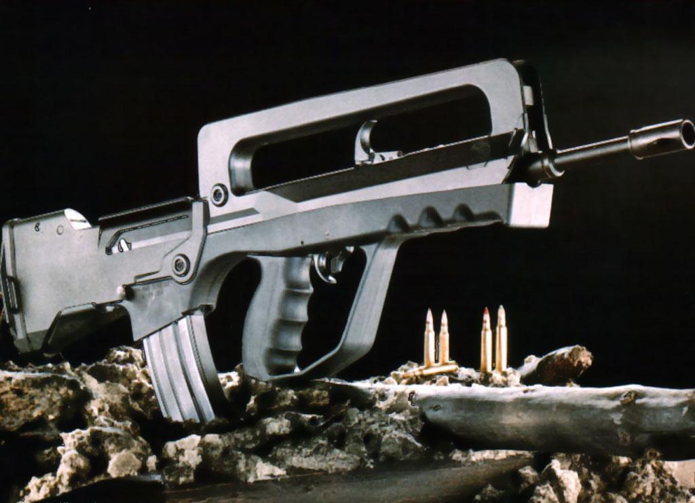
FAMAS
The FAMAS (Fusil d'Assaut de la Manufacture d'Armes de Saint-Étienne) is a French bullpup assault rifle designed and manufactured by MAS in 1978. It was the standard-issue rifle of the French military until it was replaced by the HK416 in 2017.
Key Features and Characteristics:
- Type: Bullpup assault rifle
- Place of Origin: France
- Manufacturer: MAS
- Cartridge: 5.56×45mm NATO
- Action: Lever-delayed blowback
- Rate of Fire: 900-1,100 rounds/min
- Effective Range: 450 meters
- Feed System: 25-round detachable box magazine
- Weight: 3.61 kg (8.0 lb)
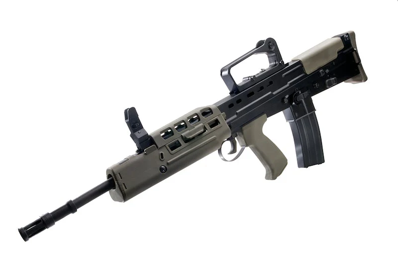
L85
The L85, also known as the SA80, is a British bullpup assault rifle. It was adopted by the British Army in 1985 and has been the standard-issue rifle of the British Armed Forces since then. The rifle has undergone several upgrades to improve its reliability and performance.
Key Features and Characteristics:
- Type: Bullpup assault rifle
- Place of Origin: United Kingdom
- Manufacturer: Royal Small Arms Factory
- Cartridge: 5.56×45mm NATO
- Action: Gas-operated, rotating bolt
- Rate of Fire: 610-775 rounds/min
- Effective Range: 400 meters
- Feed System: 30-round detachable box magazine
- Weight: 3.82 kg (8.4 lb)
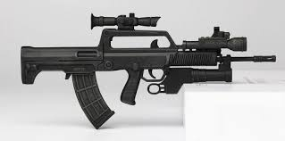
QBZ-95
The QBZ-95 (Type 95) is a Chinese bullpup assault rifle designed and manufactured by Norinco. It is the standard-issue rifle of the People's Liberation Army and People's Armed Police. The rifle features a bullpup design and is chambered for the 5.8×42mm cartridge.
Key Features and Characteristics:
- Type: Bullpup assault rifle
- Place of Origin: China
- Manufacturer: Norinco
- Cartridge: 5.8×42mm
- Action: Gas-operated, rotating bolt
- Rate of Fire: 650 rounds/min
- Effective Range: 400 meters
- Feed System: 30-round detachable box magazine
- Weight: 3.25 kg (7.2 lb)
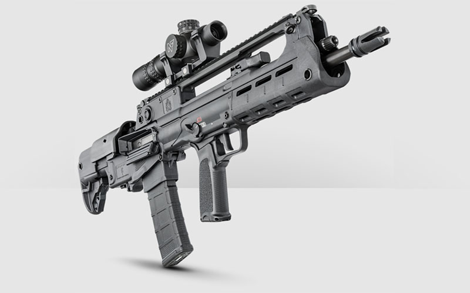
VHS-2
The VHS-2 is a Croatian bullpup assault rifle designed and manufactured by HS Produkt. It is the standard-issue rifle of the Croatian Armed Forces and has been exported to several countries. The rifle features a modern design with ambidextrous controls.
Key Features and Characteristics:
- Type: Bullpup assault rifle
- Place of Origin: Croatia
- Manufacturer: HS Produkt
- Cartridge: 5.56×45mm NATO
- Action: Gas-operated, rotating bolt
- Rate of Fire: 850 rounds/min
- Effective Range: 500 meters
- Feed System: 30-round detachable box magazine
- Weight: 3.2 kg (7.1 lb)

CZ Bren 2
The CZ Bren 2 is a Czech assault rifle designed and manufactured by Česká zbrojovka. It is an improved version of the CZ 805 Bren and has been adopted by the Czech Armed Forces and several other military and law enforcement organizations.
Key Features and Characteristics:
- Type: Assault rifle
- Place of Origin: Czech Republic
- Manufacturer: Česká zbrojovka
- Cartridge: 5.56×45mm NATO, 7.62×39mm
- Action: Gas-operated, rotating bolt
- Rate of Fire: 850 rounds/min
- Effective Range: 500 meters
- Feed System: 30-round detachable box magazine
- Weight: 3.2 kg (7.1 lb)

Beretta ARX-160
The Beretta ARX-160 is an Italian assault rifle designed and manufactured by Beretta. It is the standard-issue rifle of the Italian Armed Forces and has been exported to several countries. The rifle features a modular design and ambidextrous controls.
Key Features and Characteristics:
- Type: Assault rifle
- Place of Origin: Italy
- Manufacturer: Beretta
- Cartridge: 5.56×45mm NATO
- Action: Gas-operated, rotating bolt
- Rate of Fire: 700 rounds/min
- Effective Range: 500 meters
- Feed System: 30-round detachable box magazine
- Weight: 3.1 kg (6.8 lb)

Desert Tech MDR
The Desert Tech MDR (Micro Dynamic Rifle) is an American bullpup assault rifle designed and manufactured by Desert Tech. It features a modular design that allows for quick caliber changes and is available in several configurations.
Key Features and Characteristics:
- Type: Bullpup assault rifle
- Place of Origin: United States
- Manufacturer: Desert Tech
- Cartridge: 5.56×45mm NATO, .308 Winchester
- Action: Gas-operated, rotating bolt
- Rate of Fire: 600-800 rounds/min
- Effective Range: 500-800 meters
- Feed System: 20- or 30-round detachable box magazine
- Weight: 3.2 kg (7.1 lb)
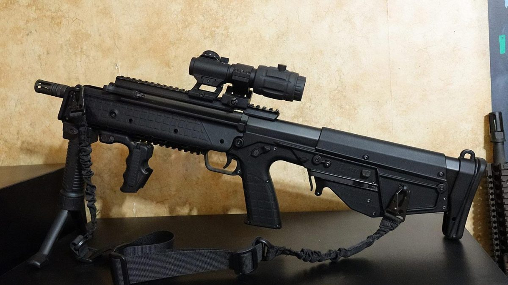
Kel-Tec RDB
The Kel-Tec RDB (Rifle, Downward-ejecting Bullpup) is an American bullpup assault rifle designed and manufactured by Kel-Tec. It features a downward-ejecting design that makes it fully ambidextrous and is chambered for the 5.56×45mm NATO cartridge.
Key Features and Characteristics:
- Type: Bullpup assault rifle
- Place of Origin: United States
- Manufacturer: Kel-Tec
- Cartridge: 5.56×45mm NATO
- Action: Gas-operated, rotating bolt
- Rate of Fire: Semi-automatic
- Effective Range: 500 meters
- Feed System: 30-round detachable box magazine
- Weight: 3.2 kg (7.1 lb)

Bushmaster ACR
The Bushmaster ACR (Adaptive Combat Rifle) is an American assault rifle designed and manufactured by Bushmaster Firearms International. It features a modular design that allows for quick caliber changes and is available in several configurations.
Key Features and Characteristics:
- Type: Assault rifle
- Place of Origin: United States
- Manufacturer: Bushmaster Firearms International
- Cartridge: 5.56×45mm NATO, 6.8mm Remington SPC
- Action: Gas-operated, rotating bolt
- Rate of Fire: Semi-automatic
- Effective Range: 500 meters
- Feed System: 30-round detachable box magazine
- Weight: 3.4 kg (7.5 lb)
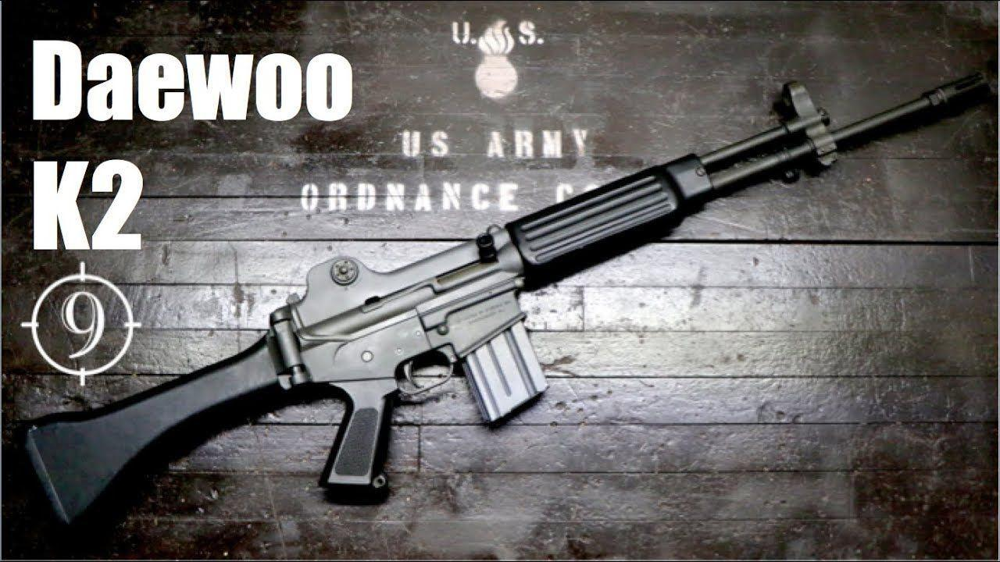
Daewoo K2
The Daewoo K2 is a South Korean assault rifle designed and manufactured by S&T Motiv (formerly Daewoo Precision Industries). It combines features from various Western rifles and has been the standard-issue rifle of the South Korean military since 1984.
Key Features and Characteristics:
- Type: Assault rifle
- Place of Origin: South Korea
- Manufacturer: S&T Motiv
- Cartridge: 5.56×45mm NATO
- Action: Gas-operated, rotating bolt
- Rate of Fire: 700-900 rounds/min
- Effective Range: 450 meters
- Feed System: 20- or 30-round detachable box magazine
- Weight: 3.26 kg (7.2 lb)
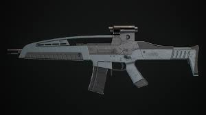
XM8
The XM8 was a prototype assault rifle developed by Heckler & Koch for the U.S. military's Future Force Warrior program. It was designed as a potential replacement for the M4 carbine, featuring a lightweight polymer construction and modular design.
Key Features and Characteristics:
- Type: Assault rifle
- Place of Origin: Germany/United States
- Manufacturer: Heckler & Koch
- Cartridge: 5.56×45mm NATO
- Action: Gas-operated, rotating bolt
- Rate of Fire: 750 rounds/min
- Effective Range: 500 meters
- Feed System: 30-round detachable box magazine
- Weight: 2.7 kg (6.0 lb)
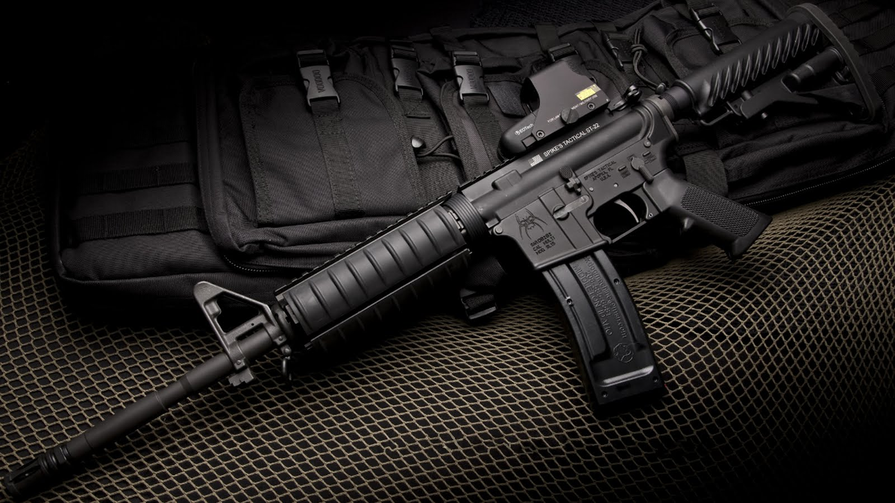
M16
The M16 is a family of military rifles adapted from the ArmaLite AR-15 rifle. The original M16 was a select-fire, 5.56×45mm rifle with a 20-round magazine. In 1964, the M16 entered US military service and the following year was deployed for jungle warfare operations during the Vietnam War.
Key Features and Characteristics:
- Type: Assault rifle
- Place of Origin: United States
- Manufacturer: Colt's Manufacturing Company, FN Herstal
- Cartridge: 5.56×45mm NATO
- Action: Gas-operated, rotating bolt
- Rate of Fire: 700-950 rounds/min
- Effective Range: 550 meters
- Feed System: 20- or 30-round detachable box magazine
- Weight: 3.26 kg (7.2 lb)

G36C
The G36C is a compact variant of the Heckler & Koch G36 assault rifle. It was designed for special operations and close-quarters combat, featuring a shorter barrel and a redesigned handguard. The G36C is used by various military and law enforcement units worldwide.
Key Features and Characteristics:
- Type: Assault rifle / Carbine
- Place of Origin: Germany
- Manufacturer: Heckler & Koch
- Cartridge: 5.56×45mm NATO
- Action: Gas-operated, rotating bolt
- Rate of Fire: 750 rounds/min
- Effective Range: 400 meters
- Feed System: 30-round detachable box magazine
- Weight: 2.82 kg (6.2 lb)